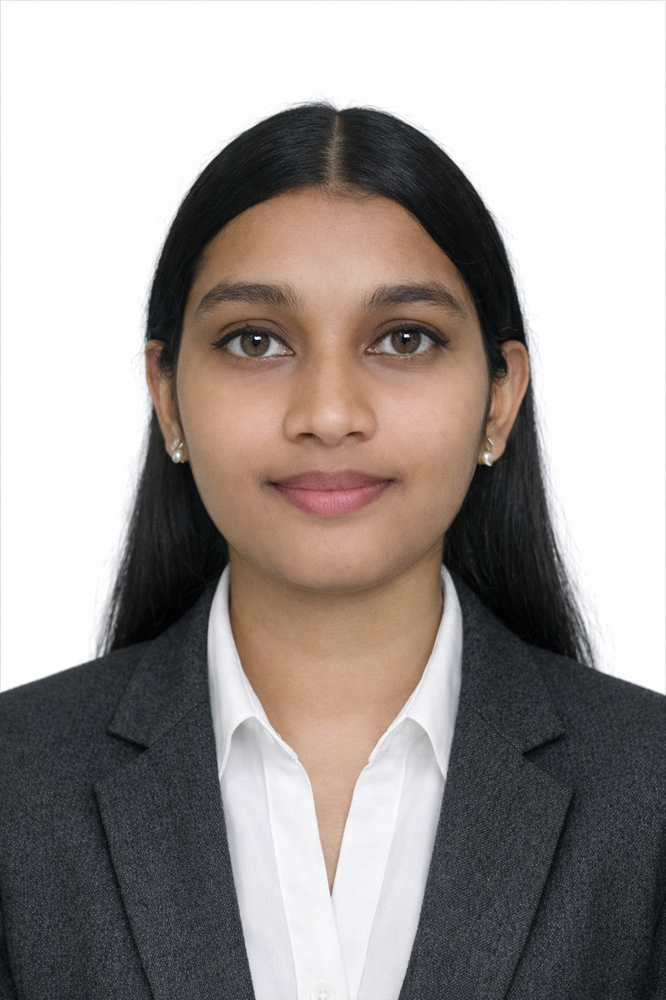

Nithya Sri Palanivel
AWS & Azure Multi-Cloud / DevOps Engineer
Building reliable cloud infrastructure, automated CI/CD pipelines, and scalable deployment workflows across AWS and Microsoft Azure.
1.3 years of enterprise IT experience at Tata Consultancy Services, with hands-on exposure to AWS, Azure, Terraform, CI/CD, Docker, Kubernetes, monitoring, automation, and cloud security.
supported

Grounded in enterprise cloud operations
I'm an AWS & Azure Multi-Cloud / DevOps Engineer with 1.3 years of enterprise IT experience at Tata Consultancy Services, where I have worked with cloud infrastructure, deployment automation, monitoring, troubleshooting, and reliability-focused operations.
My technical focus spans AWS and Microsoft Azure, Infrastructure as Code with Terraform and CloudFormation, CI/CD automation, Docker and Kubernetes, configuration management, observability, Linux, scripting, and cloud security.
I enjoy turning repetitive infrastructure and deployment tasks into automated, reliable workflows while maintaining a strong focus on availability, security, and operational efficiency.
At a glance
Multi-cloud DevOps workflow
My approach combines Infrastructure as Code, automated delivery, container orchestration, observability, and security practices to build reliable cloud environments.
Professional experience
- Administered hybrid AWS and Azure cloud infrastructure across Dev, QA, and Production environments.
- Worked with AWS EC2, S3, IAM, VPC and Azure Virtual Machines, VNets, and related cloud services.
- Supported environments targeting 99%+ availability for high-traffic operations.
- Configured Azure Blob Storage for application artifact repositories.
- Implemented role-based access control using Microsoft Entra ID.
- Automated multi-cloud infrastructure provisioning using Terraform, CloudFormation, and Ansible.
- Built and optimized CI/CD workflows using Azure Pipelines, Jenkins, and Argo CD.
- Collaborated with software engineers to troubleshoot build and deployment issues, contributing to a 25% reduction in deployment rollbacks.
- Worked with AWS Lambda and Azure Functions for event-driven backend workloads.
- Supported containerized microservice deployments using Docker, AWS EKS, and Azure Kubernetes Service.
- Built operational dashboards using Azure Monitor, AWS CloudWatch, Prometheus, and Grafana.
- Participated in production troubleshooting, incident investigation, and reliability improvements within Agile teams.
Core technology stack
Cloud Platforms
Infrastructure as Code
CI/CD & GitOps
Containers & Orchestration
Configuration Management
Monitoring & Observability
OS & Scripting
Security
Featured projects
Hands-on builds spanning serverless, infrastructure automation, cloud migration, and static hosting — each shipped with real infrastructure code.
Automated Azure Linux Web App Deployment
Automated deployment of a Linux Web App on Microsoft Azure using modular Terraform infrastructure and Azure DevOps CI/CD pipelines.
Security: Azure DevOps → Entra ID Service Principal → Federated Credentials → Least-Privilege RBAC
Serverless Tasks REST API — AWS SAM + Jenkins
Designed and deployed a fully serverless REST API on AWS using AWS SAM, with automated deployment through Jenkins pipelines.
CI/CD: GitHub → Jenkins → SAM Deployment
Heart Health — AWS Cloud Migration
Migrated a healthcare prediction application to AWS EC2 and integrated the application stack with a MySQL backend and CloudWatch monitoring.
AWS Static Website Hosting with Terraform
Hosted a static website on Amazon S3 and provisioned the infrastructure using Terraform with Git-based version control.
My DevOps workflow
Mapped end-to-end: Git, GitHub, Jenkins, Azure Pipelines, Terraform, Docker, Kubernetes, Prometheus, Grafana, CloudWatch, and Azure Monitor.
Cloud security mindset
I incorporate identity, access control, least-privilege permissions, and secure workload authentication into cloud infrastructure and deployment workflows.
Observe, detect, recover
Monitoring and observability are part of my approach to maintaining application reliability, investigating alerts, and improving operational recovery.
Explore my hands-on Cloud & DevOps work on GitHub
heart-health-aws-migration
Healthcare prediction app migrated to AWS EC2 with MySQL and CloudWatch monitoring.
View Repoaws-s3-static-site-terraform
Static website hosting on S3, infrastructure fully defined in Terraform.
View Repoazure-linux-webapp-terraform
Modular Terraform deployment of an Azure Linux Web App with RBAC.
View Reposerverless-tasks-api-sam
Serverless REST API with Lambda, API Gateway, and DynamoDB.
View Repoterraform-practice
Working repository for IaC patterns, modules, and provider configuration.
View Repodocker-practice
Containerization exercises: Dockerfiles, multi-stage builds, and Compose.
View RepoMore projects, experiments, and Cloud/DevOps practice → GitHub
Certifications & training
AWS APAC Virtual Internship
Cloud & Operations Fundamentals
IBM DevOps Fundamentals
IBM Skills Network
B.Tech — Computer Science and Business Systems
K. Ramakrishnan College of Engineering
Recognition & impact
Enterprise Reliability
Supported cloud environments for high-traffic enterprise operations at 99%+ availability.
Deployment Efficiency
Contributed to CI/CD improvements resulting in 25% fewer deployment rollbacks.
TCS Recognition
Recognized for demonstrating "Respect for Individual" — a TCS core value.
Performance Recognition
Recognized as a top performer of the month after joining the British Airways project.
Looking for a Cloud & DevOps opportunity?
I'm actively interested in opportunities across AWS, Azure, Cloud Engineering, DevOps, CloudOps, Infrastructure Automation, CI/CD, Kubernetes, and Multi-Cloud environments.
Let's connect
Interested in Cloud, DevOps, automation, or infrastructure engineering? I'd be happy to connect.